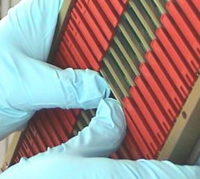

Operating Documentation
Direction 5114045-800, Rev# 10
LightSpeed 4.X Service Information (Advanced)
Operating Documentation |
| Required Persons | Preliminary Reqs | Procedure | Finalization |
|---|---|---|---|
| 1 |
| Last Revised: | January 27, 2004 |
| Follow ALL Electro-Static Discharge procedures. Always use ESD Wrist Strap and grounding cords. The use of a ground Monitor is suggested. | |
Move the table cradle to the home position, and lower the table to its lowest elevation.
Remove gantry right side cover, and turn OFF all three (3) service switches on the STC backplane. Remove the rest of the gantry covers.
Turn off all 3 switches (Axial Drive, HVDC, 120VAC) on the STC backplane.
Lock the gantry in position, using the rotational lock (see “Rotational Locking Pin” section in Equipment Service - Gantry).
Put on wrist strap and use ESD precautions.
Remove appropriate chassis cover.
When working in the Right chassis, the fiber-optic cable must first be removed from the Transmit (“TX”) port (see Illustration 1).
Left and Right chassis have 6 captive screws.
Center chassis has 8 captive screws.
Illustration 1: Right DAS Chassis

Slide Converter board out of chassis.
Lift both red ejection tabs and the board will disengage from backplane connection.
Illustration 2: Use ejector tabs to remove converter cards from chassis

Continue sliding board straight out and place into anti-static bag.
| Follow ALL Electro-Static Discharge procedures. Always use ESD Wrist Strap and grounding cords. The use of a ground Monitor is suggested. | |
Remove New Converter Board from anti-static bag.
Align Converter board edges to card guides in Chassis.
Slide the board into the chassis until red ejector tabs align with the card guides ( Illustration 2).
Fold the Red tabs over to push board into place. Press in on tabs to fully seat card into the backplane connector-the card should move inward an additional millimeter (approximately).
Illustration 3: Seat Convertor with your Thumbs

| Card must be fully seated. Failure to fully seat a converter card into DAS backplane may result in the failure of all 128 channels in that converter card. | |
Turn the Gantry 120V power ON, and verify no failures during power-up self-tests, via DCB LED status or System error log.
Reinstall Converter board chassis cover by first engaging all screws, and then tightening.
If replacing cards in the right DAS chassis, reconnect the fiber-optic cable to the transmit (TX) port (see Illustration 1).
If applications software is up, perform a DAS Reset from the Reset Menu.
Depending on the fault, let the board warm-up five (5) minutes to verify it fixed the problem, but at least 1 hour before DASTools, FastCal, or Image Quality scans. A cold board may fail Offset Drift or Pop Noise until it is in normal operating temperature ranges.
Disengage rotational lock.
Turn on Axial and HVDC switches (on STC backplane).
Verify proper functionality:
Run at least 10 passes of Scan Data Path Diagnostic from Converter Boards.
Run 1 pass of DASTOOLS.
Run FastCal, if less than 5 cards replaced.
Run full FastCal and Phantom Cal, if more than 5 cards replaced or if I/Q fails due to replaced boards.
| NOTE: | Upon running FastCal the first time, Daily IQ check may fail, and can generally be ignored, provided the images look good. See “Daily IQ Check” in FastCal. |
Take 10 I/Q scans of the 48cm phantom.
Verify fault or reason to replace the board now passes.
Reassemble gantry covers.